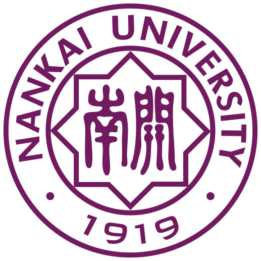

<div id="pre-loading">
<div id="page-container" ng-class="go_parm" ng-hide="in_forget">
<div id="welcome-0" class="swipe-card page">
    <div class="content">
        <div class="title">计控评课</div>
        <div class="description">
            你在思源堂前明月里思忆过往，<br>
            我在马蹄湖的日出里展望远方。<br>
            青莲紫，学涯短，成追忆，<br>
            文理梦，商自强，助兴邦。<br>
            渤海之滨，白河之津，<br>
            母校召唤，心系发展。
        </div>
    </div>
    <span class="expand-arrow" ng-class="{hide:swiping||hide_arrow}">
        <ng-md-icon class="md-icon" icon="expand_more" size="64" id="group-add-icon"></ng-md-icon>
        <ng-md-icon class="md-icon" icon="expand_more" size="64" id="group-add-icon"></ng-md-icon>
    </span> 
</div>
<div id="welcome-1" class="swipe-card page">
    <div class="content">
        <div class="description">
            <p>
            那些年，那些一起上过的公选课，<br>
            倒影在你我的青春里：
            </p>
            <p>
            天文课上我们曾一起细斟北斗，<br>
            叹万象为宾客的天象奇观；<br>
            象棋课上我们曾共享棋逢对手，<br>
            悟车马炮车卒的挥斥方遒。
            </p>
            <p>
            加减乘除、乐趣迭代的数学文化，<br>
            学礼以立，张弛有度的社交礼仪。<br>
            异彩纷呈如歌舞，宫商角徵羽，<br>
            行云流水如书法，草隶行篆楷。
            </p>
            <p>
            多年以后，暮然回首，<br>
            母校之爱，春风化雨，<br>
            润物无声，潜移默化，<br>
            允公允能，日新月异。
            </p>
        </div>
    </div>
    <span class="expand-arrow" ng-class="{hide:swiping||hide_arrow}">
        <ng-md-icon class="md-icon" icon="expand_more" size="64" id="group-add-icon"></ng-md-icon>
        <ng-md-icon class="md-icon" icon="expand_more" size="64" id="group-add-icon"></ng-md-icon>
    </span>
</div>
<div id="welcome-2" class="swipe-card page">
    <div class="content">
        <div class="description">
            <div class="title">操作说明</div>
            <div class="description">
                <p>
                本系统面向1987级-2015级所有南开本科生<br>
                任课教师可凭一卡通号登录。<br>
                精彩评论上墙，更有神秘好礼相送。<br>
                </p>
                <p>
                    欢迎“拍砖”，将意见或建议发至<br>
                    jwczlk@nankai.edu.cn
                </p>
            </div>
        </div>
    </div>
    <span class="expand-arrow" ng-class="{hide:swiping||hide_arrow}">
        <ng-md-icon class="md-icon" icon="expand_more" size="64" id="group-add-icon"></ng-md-icon>
        <ng-md-icon class="md-icon" icon="expand_more" size="64" id="group-add-icon"></ng-md-icon>
    </span>
</div>

<div id="welcome-3" class="swipe-card page">
    <!--  -->
    <div class="content">
        <div class="CCTitle">
            <p>计控评课</p>
        </div>
        <div class="major">
            <div class="computer">
                <md-button class="md-primary" ng-href="./hot_courses.html?type=computer">
                    我是计算机的！<br>
                    点我进入课程列表>>
                </md-button>
            </div>
            <div class="control">
                <md-button class="md-primary" ng-href="./hot_courses.html?type=control">
                    我是控制的！<br>
                    点我进入课程列表>>
                </md-button>
            </div>
        </div>
        <div class="hot">
            <div class="hotDiv">
                <div class="hotIcon">
                    <div class="hotTitle">热门课程</div>
                    <div class="hotMore">more>></div>
                </div>
                <div class="hotContent">
                    <div class="hotItem" ng-repeat="course in hotCourses">
                        <div class="courseName">{{course.course}}&nbsp;&nbsp;&nbsp;&nbsp;</div>
                        <div class="hotItemInfo">评论（{{course.comments}}）</div>   
                    </div>
                </div>
            </div>
            <div class="hotDiv">
                <div class="hotIcon">
                    <div class="hotTitle">热门评论</div>
                    <div class="hotMore">more>></div>
                </div>
                <div class="hotContent">
                    <div class="hotItem" ng-repeat="advice in hotAdvices">
                        <div class="adviceText">{{advice.advice}}&nbsp;&nbsp;&nbsp;&nbsp;（{{advice.date}}）</div>
                        <div class="hotItemInfo"></div>   
                    </div>
                </div>
            </div>
        </div>
        <div class="footer">
            <p>你的研究生生涯，来吐槽一下吧！</p>
        </div>
    </div>
</div>
</div>
<% if ENV['NANOC_ENV']=='production' %>
<% @assets_path = "../assets" %>
<% else %>
<% @assets_path = "../../assets" %>
<% end %>

<div id="forget_page" ng-if="in_forget">
<h4>亲爱的校友</h4>
<p>
    或许您已离开太久，忘记了本科学号。
    不要急，只要您通过微信或邮件将您的姓名、性别、专业、入学年份及毕业年份告知我们，我们会尽快帮您找回学号。
</p>     
<p>
    感谢您对母校发展的关心。南开一路有你，未来携手共进。
</p>     
    邮箱：jwcqj@nankai.edu.cn<br><br> 
    南开大学教务处微信公众号<br> 
</p>
<div>
    /jwc_qr.jpg" alt="">
</div>
    <md-button class="md-raised md-primary"  ng-click="toggle_forget()">返回</md-button>
</div>

</div>


<% content_for :test do %>
<% end %>